VlnPlot用法及ggplot复现
原文：https://mp.weixin.qq.com/s?__biz=MzAwMzIzOTk5OQ==&mid=2247504768&idx=1&sn=4fc5eb47037d3a80178e32975488d70b&chksm=9b3caad0ac4b23c61147cfb0f46ecd846568f37ce89c963eb5f069d3e89a8ba285897726bb3d#rd 合集：单细胞教程全收录

写在前面
 随着我们课程的持续深入，以及各位小伙伴分析技能的日益提升，目前很多同学已经不满足于Seurat的可视化功能并希望能够做出一些改进的可视化 。我个人对可视化的方式改进其实并不感冒，画图嘛，跟翻译一样信达雅 即可，没必要盲目追求视觉效果。不过这也并不方案我给大家做这类的教程。我们准备出一系列单细胞测图片改造计划 的推送，大家如果有任何关于可视化的想法，也可以通过文末客服微信联系我们。
本次推送我们进行VlnPlot的基本用法与其ggplot2的复现，下节课课程我们会和大家一起进行VlnPlot的ggplot2改造。
随着我们课程的持续深入，以及各位小伙伴分析技能的日益提升，目前很多同学已经不满足于Seurat的可视化功能并希望能够做出一些改进的可视化 。我个人对可视化的方式改进其实并不感冒，画图嘛，跟翻译一样信达雅 即可，没必要盲目追求视觉效果。不过这也并不方案我给大家做这类的教程。我们准备出一系列单细胞测图片改造计划 的推送，大家如果有任何关于可视化的想法，也可以通过文末客服微信联系我们。
本次推送我们进行VlnPlot的基本用法与其ggplot2的复现，下节课课程我们会和大家一起进行VlnPlot的ggplot2改造。
视频教程
B站同步播出，连播更方便，文末阅读原文可直达：https://www.bilibili.com/video/BV1iM4y127Ez?p=6
图文教程
一、数据基本情况
本部分测试数据是多样本整合的输出文件。
# 加载包并读取数据：
library(Seurat)
## Loading required package: SeuratObject
## Loading required package: sp
## The legacy packages maptools, rgdal, and rgeos, underpinning the sp package,
## which was just loaded, were retired in October 2023.
## Please refer to R-spatial evolution reports for details, especially
## https://r-spatial.org/r/2023/05/15/evolution4.html.
## It may be desirable to make the sf package available;
## package maintainers should consider adding sf to Suggests:.
##
## Attaching package: 'SeuratObject'
## The following objects are masked from 'package:base':
##
## intersect, saveRDS
## Loading Seurat v5 beta version
## To maintain compatibility with previous workflows, new Seurat objects will use the previous object structure by default
## To use new Seurat v5 assays please run: options(Seurat.object.assay.version = 'v5')
scRNA <- readRDS('pbmcrenamed.rds')
# 查看一下数据细胞类型及组别：
DimPlot(scRNA,split.by = 'group')
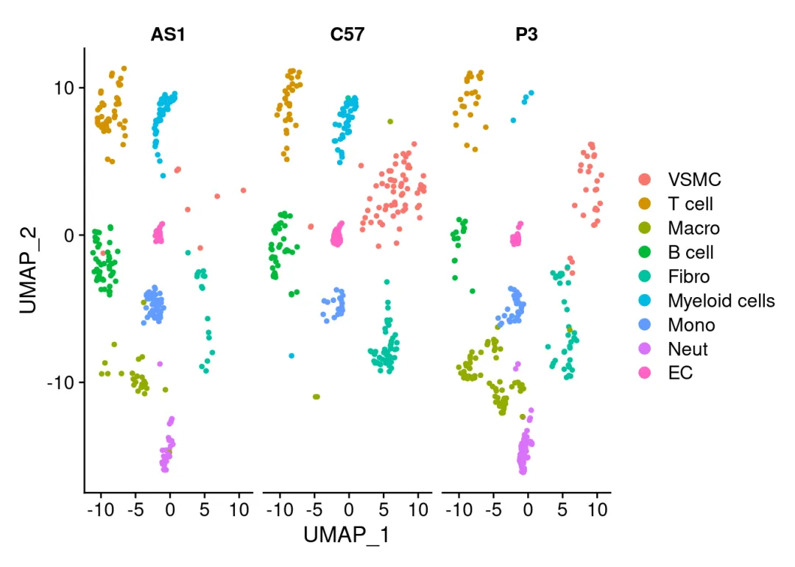
# 共有三个组：
unique(scRNA$group)
## [1] "C57" "AS1" "P3"
# 共包含九种细胞类型：
unique(scRNA$celltype)
## [1] VSMC T cell Fibro EC Myeloid cells
## [6] B cell Mono Macro Neut
## Levels: VSMC T cell Macro B cell Fibro Myeloid cells Mono Neut EC
#### 查看高表达基因：
library(dplyr)
##
## Attaching package: 'dplyr'
## The following objects are masked from 'package:stats':
##
## filter, lag
## The following objects are masked from 'package:base':
##
## intersect, setdiff, setequal, union
# 按照表达量给基因排序：
myorder <- apply(as.data.frame(scRNA@assays$RNA@data), 1, function(x){sum(x)}) %>% order(.,decreasing = T)
# 看一下总表达量最高的5个基因：
rownames(scRNA)[myorder][1:5]
## [1] "Gm42418" "Tmsb4x" "Malat1" "Actb" "mt-Atp6"
# 浅画一下VlnPlot：
VlnPlot(scRNA,features = 'Gm42418')
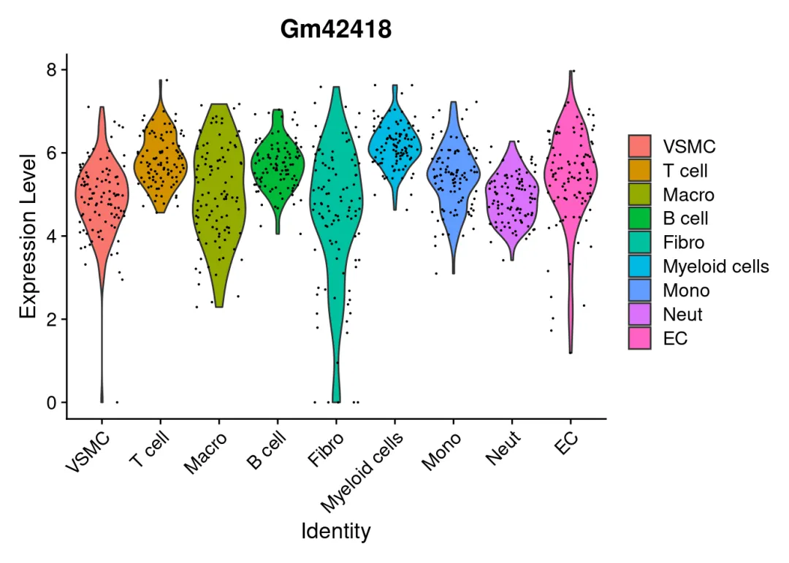
二、VlnPlot用法
library(patchwork)
# 调整点的大小:
VlnPlot(scRNA,features = 'Gm42418',pt.size = 0.5)| # 默认为1
VlnPlot(scRNA,features = 'Gm42418',pt.size = 0) # 点的大小为0时即关闭点的展示
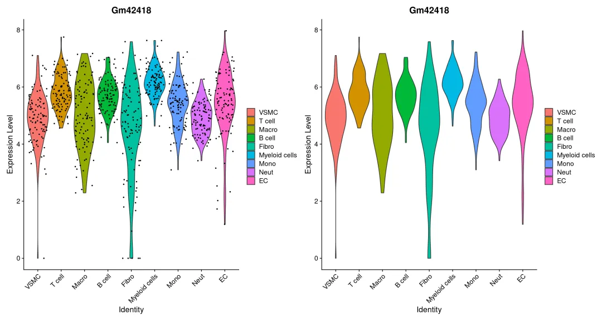
ori_p<-VlnPlot(scRNA,features = 'Gm42418',pt.size = 0)
# 调整颜色：
library(ggsci)
# 离散型：
ori_p|
VlnPlot(scRNA,features = 'Gm42418',pt.size = 0,cols = ggsci::pal_npg()(10) )
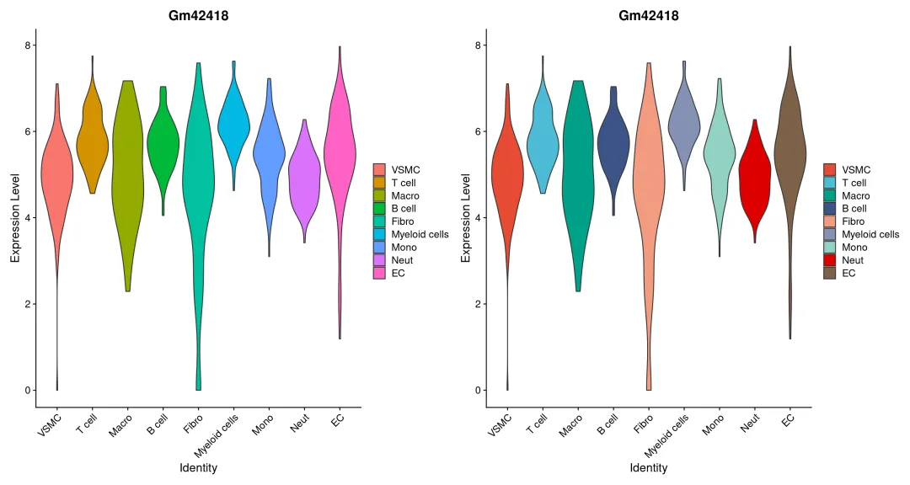
# 渐变色：
ori_p|
VlnPlot(scRNA,features = 'Gm42418',pt.size = 0,cols = ggsci::pal_gsea()(10) )
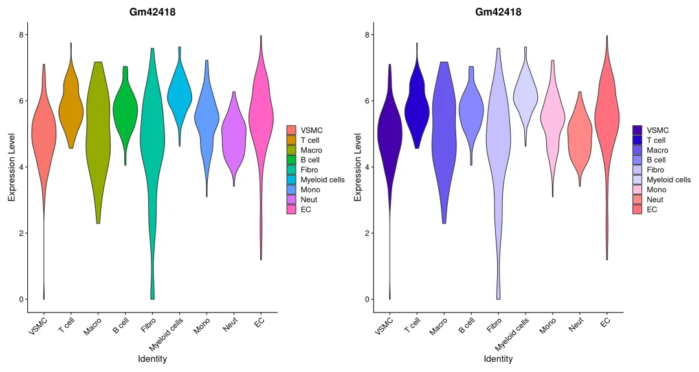
# 降序：
ori_p|
VlnPlot(scRNA,features = 'Gm42418',pt.size = 0,sort = T)
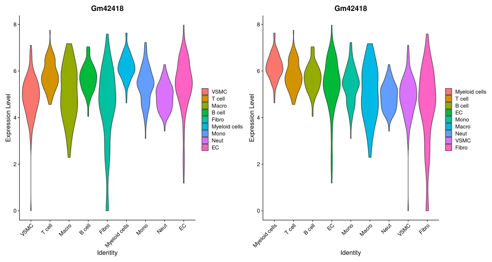
Hide
# 展示不同分组变量：
ori_p|
VlnPlot(scRNA,features = 'Gm42418',pt.size = 0,group.by = 'group')
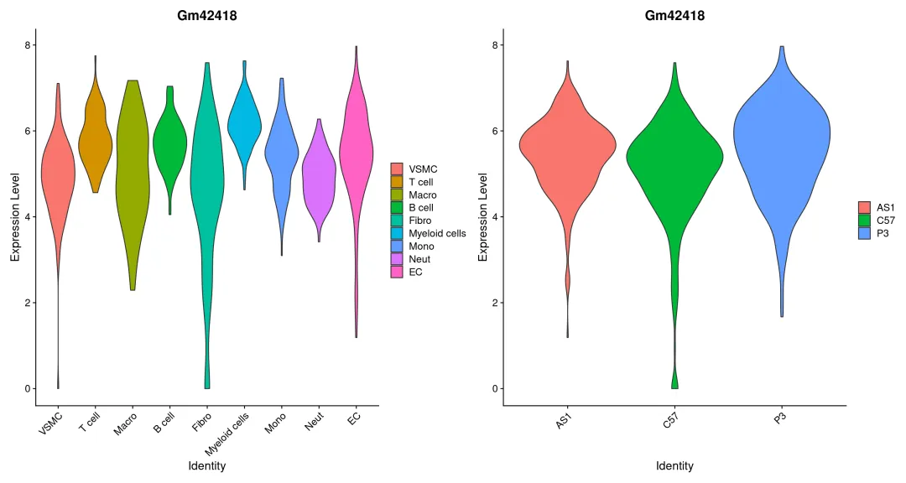
# 把每个celltype：
ori_p|
VlnPlot(scRNA,features = 'Gm42418',pt.size = 0,split.by = 'group')
## The default behaviour of split.by has changed.
## Separate violin plots are now plotted side-by-side.
## To restore the old behaviour of a single split violin,
## set split.plot = TRUE.
##
## This message will be shown once per session.
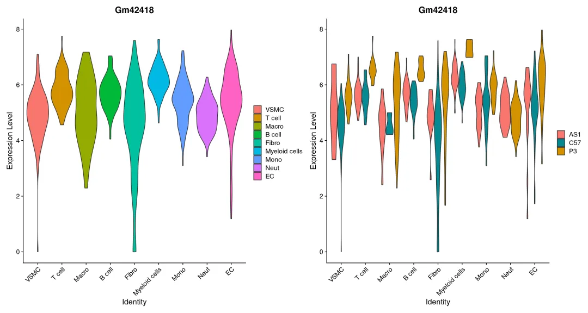
# 绘制多个基因：
he_gene<- rownames(scRNA)[myorder][1:10]
VlnPlot(scRNA,features = he_gene,pt.size = 0)
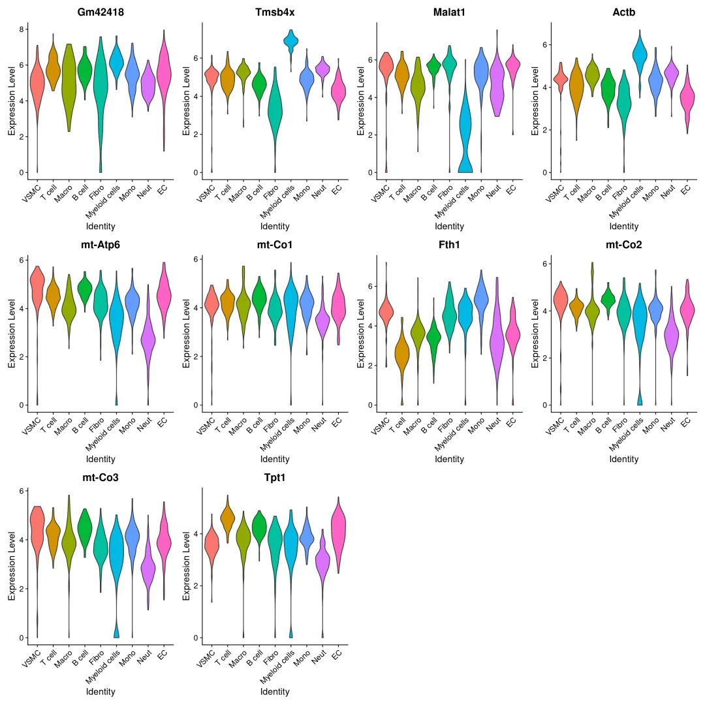
# 多个基因更适合堆积小提琴图：
VlnPlot(scRNA,features = he_gene,pt.size = 0,stack = T )
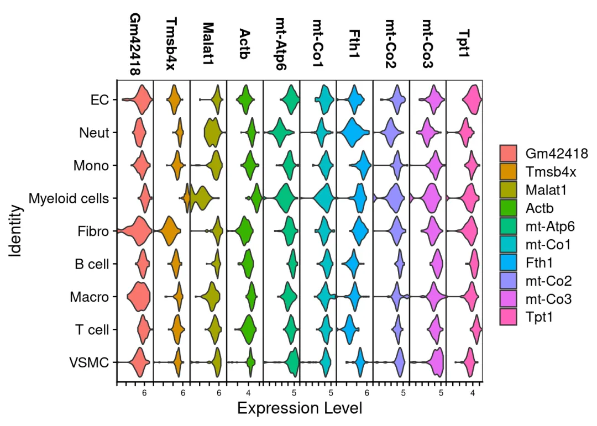
三、ggplot2复现
3.1 VlnPlot源码
# Vlnplot源码(注意下面的函数名不要加括号)：
VlnPlot
## function (object, features, cols = NULL, pt.size = NULL, alpha = 1,
## idents = NULL, sort = FALSE, assay = NULL, group.by = NULL,
## split.by = NULL, adjust = 1, y.max = NULL, same.y.lims = FALSE,
## log = FALSE, ncol = NULL, slot = deprecated(), layer = "data",
## split.plot = FALSE, stack = FALSE, combine = TRUE, fill.by = "feature",
## flip = FALSE, add.noise = TRUE, raster = NULL)
## {
## if (is_present(arg = slot)) {
## deprecate_soft(when = "5.0.0", what = "VlnPlot(slot = )",
## with = "VlnPlot(layer = )")
## layer <- slot %||% layer
## }
## if (!is.null(x = split.by) & getOption(x = "Seurat.warn.vlnplot.split",
## default = TRUE)) {
## message("The default behaviour of split.by has changed.\n",
## "Separate violin plots are now plotted side-by-side.\n",
## "To restore the old behaviour of a single split violin,\n",
## "set split.plot = TRUE.\n \nThis message will be shown once per session.")
## options(Seurat.warn.vlnplot.split = FALSE)
## }
## return(ExIPlot(object = object, type = ifelse(test = split.plot,
## yes = "splitViolin", no = "violin"), features = features,
## idents = idents, ncol = ncol, sort = sort, assay = assay,
## y.max = y.max, same.y.lims = same.y.lims, adjust = adjust,
## pt.size = pt.size, alpha = alpha, cols = cols, group.by = group.by,
## split.by = split.by, log = log, layer = layer, stack = stack,
## combine = combine, fill.by = fill.by, flip = flip, add.noise = add.noise,
## raster = raster))
## }
## <bytecode: 0x5644486d9680>
## <environment: namespace:Seurat>
依赖了另一个函数出图：
### 这个代码框不要运行 ！！！###
# 函数源码为：
ExIPlot <-
function (object, features, type = "violin", idents = NULL,
ncol = NULL, sort = FALSE, assay = NULL, y.max = NULL, same.y.lims = FALSE,
adjust = 1, cols = NULL, pt.size = 0, alpha = 1, group.by = NULL,
split.by = NULL, log = FALSE, slot = deprecated(), layer = "data",
stack = FALSE, combine = TRUE, fill.by = NULL, flip = FALSE,
add.noise = TRUE, raster = NULL)
{
if (is_present(arg = slot)) {
layer <- layer %||% slot
}
assay <- assay %||% DefaultAssay(object = object)
DefaultAssay(object = object) <- assay
cells <- Cells(x = object, assay = NULL)
if (isTRUE(x = stack)) {
if (!is.null(x = ncol)) {
warning("'ncol' is ignored with 'stack' is TRUE",
call. = FALSE, immediate. = TRUE)
}
if (!is.null(x = y.max)) {
warning("'y.max' is ignored when 'stack' is TRUE",
call. = FALSE, immediate. = TRUE)
}
}
else {
ncol <- ncol %||% ifelse(test = length(x = features) >
9, yes = 4, no = min(length(x = features), 3))
}
if (!is.null(x = idents)) {
cells <- intersect(x = names(x = Idents(object = object)[Idents(object = object) %in%
idents]), y = cells)
}
data <- FetchData(object = object, vars = features, slot = layer,
cells = cells)
pt.size <- pt.size %||% AutoPointSize(data = object)
features <- colnames(x = data)
data <- data[cells, , drop = FALSE]
idents <- if (is.null(x = group.by)) {
Idents(object = object)[cells]
}
else {
object[[group.by, drop = TRUE]][cells]
}
if (!is.factor(x = idents)) {
idents <- factor(x = idents)
}
if (is.null(x = split.by)) {
split <- NULL
}
else {
split <- FetchData(object, split.by)[cells, split.by]
if (!is.factor(x = split)) {
split <- factor(x = split)
}
if (is.null(x = cols)) {
cols <- hue_pal()(length(x = levels(x = idents)))
cols <- Interleave(cols, InvertHex(hexadecimal = cols))
}
else if (length(x = cols) == 1 && cols == "interaction") {
split <- interaction(idents, split)
cols <- hue_pal()(length(x = levels(x = idents)))
}
else {
cols <- Col2Hex(cols)
}
if (length(x = cols) < length(x = levels(x = split))) {
cols <- Interleave(cols, InvertHex(hexadecimal = cols))
}
cols <- rep_len(x = cols, length.out = length(x = levels(x = split)))
names(x = cols) <- levels(x = split)
if ((length(x = cols) > 2) & (type == "splitViolin")) {
warning("Split violin is only supported for <3 groups, using multi-violin.")
type <- "violin"
}
}
if (same.y.lims && is.null(x = y.max)) {
y.max <- max(data)
}
if (isTRUE(x = stack)) {
return(MultiExIPlot(type = type, data = data, idents = idents,
split = split, sort = sort, same.y.lims = same.y.lims,
adjust = adjust, cols = cols, pt.size = pt.size,
log = log, fill.by = fill.by, add.noise = add.noise,
flip = flip))
}
plots <- lapply(X = features, FUN = function(x) {
return(SingleExIPlot(type = type, data = data[, x, drop = FALSE],
idents = idents, split = split, sort = sort, y.max = y.max,
adjust = adjust, cols = cols, pt.size = pt.size,
alpha = alpha, log = log, add.noise = add.noise,
raster = raster))
})
label.fxn <- switch(EXPR = type, violin = if (stack) {
xlab
} else {
ylab
}, splitViolin = if (stack) {
xlab
} else {
ylab
}, ridge = xlab, stop("Unknown ExIPlot type ", type, call. = FALSE))
for (i in 1:length(x = plots)) {
key <- paste0(unlist(x = strsplit(x = features[i], split = "_"))[1],
"_")
obj <- names(x = which(x = Key(object = object) == key))
if (length(x = obj) == 1) {
if (inherits(x = object[[obj]], what = "DimReduc")) {
plots[[i]] <- plots[[i]] + label.fxn(label = "Embeddings Value")
}
else if (inherits(x = object[[obj]], what = "Assay")) {
next
}
else {
warning("Unknown object type ", class(x = object),
immediate. = TRUE, call. = FALSE)
plots[[i]] <- plots[[i]] + label.fxn(label = NULL)
}
}
else if (!features[i] %in% rownames(x = object)) {
plots[[i]] <- plots[[i]] + label.fxn(label = NULL)
}
}
if (combine) {
plots <- wrap_plots(plots, ncol = ncol)
if (length(x = features) > 1) {
plots <- plots & NoLegend()
}
}
return(plots)
}
最终的绘图函数为：
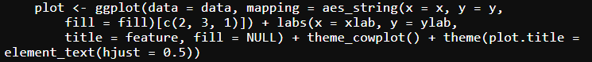
3.2 绘图数据整理
ggplot2的图片绘制需要一个长格式的数据，我们以上面的高表达基因为例，整理出一个长格式数据框
# 取出表达矩阵：
data4plot <- scRNA@assays$RNA@data[he_gene[1:5],] %>% as.data.frame() %>% t()
# 添加注释信息：
data4plot <- cbind(data4plot,scRNA@meta.data[,c('group','celltype')])
# 查看一下表头：
head(data4plot)
## Gm42418 Tmsb4x Malat1 Actb mt-Atp6 group
## AAAGGGCTCGCAGAGA-1_1 3.125663 5.191950 5.443660 4.880147 4.500693 C57
## AACACACAGCATCCCG-1_1 5.717602 4.747414 4.719490 4.166542 5.093166 C57
## AACAGGGTCAACACCA-1_1 4.716741 4.179333 5.849399 3.356926 3.870171 C57
## AACCCAAAGGCCTTGC-1_1 5.104691 3.290715 6.404316 4.364196 3.569047 C57
## AACCCAAAGTGGACGT-1_1 5.853611 7.403626 3.399781 5.316662 3.897164 C57
## AACCCAAGTCCGAAGA-1_1 4.562551 6.145295 4.913077 5.337041 3.646919 C57
## celltype
## AAAGGGCTCGCAGAGA-1_1 VSMC
## AACACACAGCATCCCG-1_1 T cell
## AACAGGGTCAACACCA-1_1 Fibro
## AACCCAAAGGCCTTGC-1_1 EC
## AACCCAAAGTGGACGT-1_1 Myeloid cells
## AACCCAAGTCCGAAGA-1_1 T cell
3.3 ggplot2复刻VlnPlot
# 待复刻的图：
plot0 <- VlnPlot(scRNA,features = 'Gm42418',pt.size = 0)
plot0
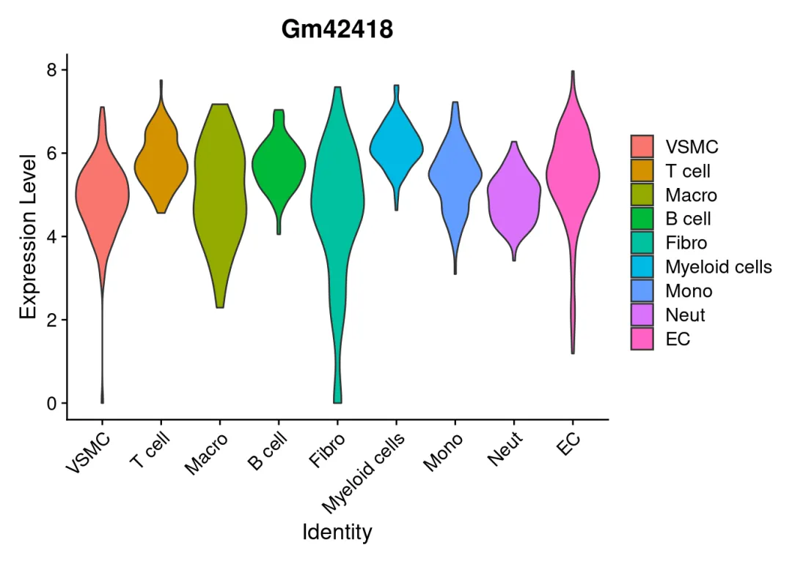
library(ggplot2)
library(ggthemes)
# 最简单的复刻：
plot1 <- ggplot(data = data4plot,
aes(x = celltype, y = Gm42418, fill = celltype))+ # 确定坐标与颜色填充
geom_violin()# 绘制小提琴图
plot1 # 显然这个还不是很像
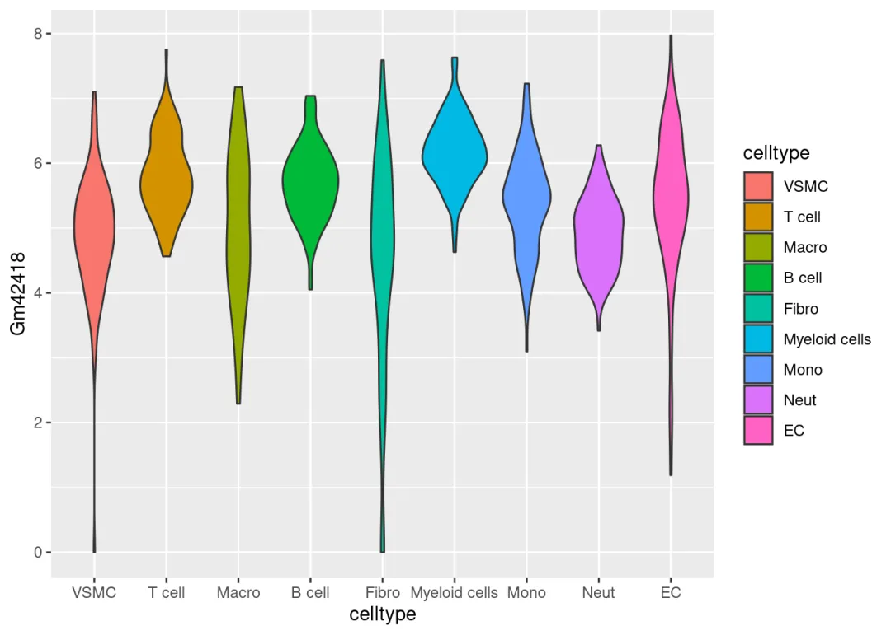
# 稍作修改
plot2 <- plot1 +
labs(x = 'Identity', y = 'Expression Level', title = 'Gm42418', fill = NULL) + # 修改标题
geom_violin()+
theme_bw()+ # 去灰色背景
theme_few()+ # 去网格
theme_classic()+ #去掉右侧与上方的边框
theme(plot.title = element_text(hjust = 0.5,face = 'bold',size=15) )+ # 加粗标题并调整大小
theme(axis.text.x.bottom = element_text(angle = 45,hjust = 1,vjust = 1, size = 12), # 调整x轴坐标位置、字体、大小
axis.text.y.left = element_text(size=10)) # y轴坐标斜体45°
plot2
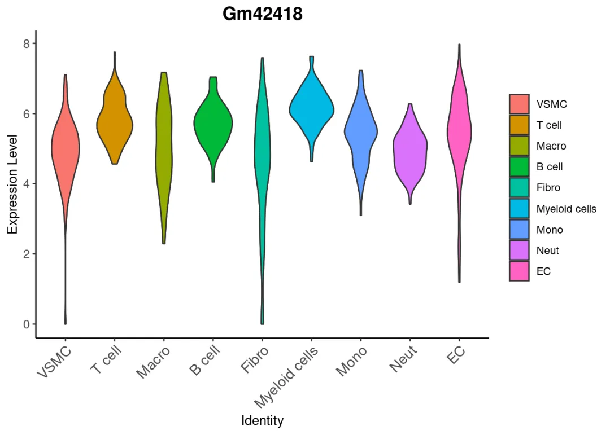
# 最后看一下，第一张图和第三张图基本一致
library(patchwork)
plot0/plot1/plot2 # 需要横向排列则是plot0|plot1|plot2
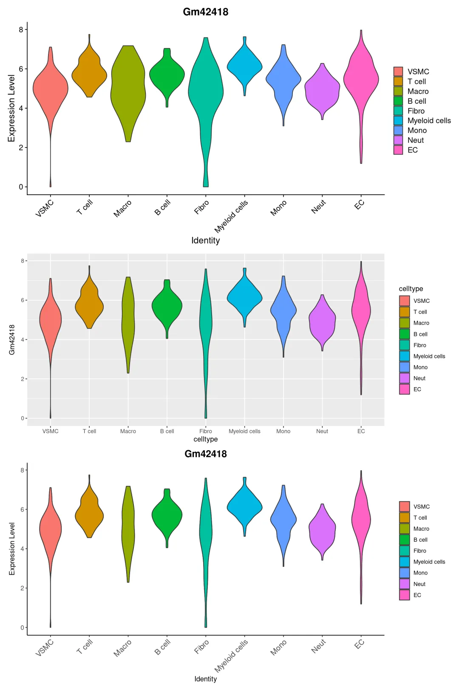
3.4 ggplot2复刻stack vlnplot
原本VlnPlot中的stack=True选项依赖MultiExIPlo进行可视化：
# MultiExIPlot源码：
function (data, idents, split = NULL, type = "violin", sort = FALSE,
same.y.lims = same.y.lims, adjust = 1, pt.size = 0, cols = NULL,
seed.use = 42, log = FALSE, fill.by = NULL, add.noise = TRUE,
flip = NULL)
{
if (!(fill.by %in% c("feature", "ident"))) {
stop("`fill.by` must be either `feature` or `ident`")
}
if (!is.null(x = seed.use)) {
set.seed(seed = seed.use)
}
if (!is.data.frame(x = data) || ncol(x = data) < 2) {
stop("MultiExIPlot requires a data frame with >1 column")
}
data <- Melt(x = data)
data <- data.frame(feature = data$cols, expression = data$vals,
ident = rep_len(x = idents, length.out = nrow(x = data)))
if ((is.character(x = sort) && nchar(x = sort) > 0) || sort) {
data$feature <- as.vector(x = data$feature)
data$ident <- as.vector(x = data$ident)
avgs.matrix <- sapply(X = split(x = data, f = data$ident),
FUN = function(df) {
return(tapply(X = df$expression, INDEX = df$feature,
FUN = mean))
})
idents.order <- hclust(d = dist(x = t(x = L2Norm(mat = avgs.matrix,
MARGIN = 2))))$order
avgs.matrix <- avgs.matrix[, idents.order]
avgs.matrix <- L2Norm(mat = avgs.matrix, MARGIN = 1)
position <- apply(X = avgs.matrix, MARGIN = 1, FUN = which.max)
mat <- hclust(d = dist(x = avgs.matrix))$merge
orderings <- list()
for (i in 1:nrow(mat)) {
x <- if (mat[i, 1] < 0)
-mat[i, 1]
else orderings[[mat[i, 1]]]
y <- if (mat[i, 2] < 0)
-mat[i, 2]
else orderings[[mat[i, 2]]]
x.pos <- min(x = position[x])
y.pos <- min(x = position[y])
orderings[[i]] <- if (x.pos < y.pos) {
c(x, y)
}
else {
c(y, x)
}
}
features.order <- orderings[[length(x = orderings)]]
data$feature <- factor(x = data$feature, levels = unique(x = sort(x = data$feature))[features.order])
data$ident <- factor(x = data$ident, levels = unique(x = sort(x = data$ident))[rev(x = idents.order)])
}
else {
data$feature <- factor(x = data$feature, levels = unique(x = data$feature))
}
if (log) {
noise <- rnorm(n = nrow(x = data))/200
data$expression <- data$expression + 1
}
else {
noise <- rnorm(n = nrow(x = data))/1e+05
}
if (!add.noise) {
noise <- noise * 0
}
for (f in unique(x = data$feature)) {
if (all(data$expression[(data$feature == f)] == data$expression[(data$feature ==
f)][1])) {
warning("All cells have the same value of ", f,
call. = FALSE, immediate. = TRUE)
}
else {
data$expression[(data$feature == f)] <- data$expression[(data$feature ==
f)] + noise[(data$feature == f)]
}
}
if (type == "violin" && !is.null(x = split)) {
data$split <- rep_len(x = split, length.out = nrow(data))
vln.geom <- geom_violin
fill.by <- "split"
}
else if (type == "splitViolin" && !is.null(x = split)) {
data$split <- rep_len(x = split, length.out = nrow(data))
vln.geom <- geom_split_violin
fill.by <- "split"
type <- "violin"
}
else {
vln.geom <- geom_violin
}
switch(EXPR = type, violin = {
geom <- list(vln.geom(scale = "width", adjust = adjust,
trim = TRUE))
}, ridge = {
geom <- list(geom_density_ridges(scale = 4), theme_ridges(),
scale_y_discrete(expand = c(0.01, 0)))
}, stop("Unknown plot type: ", type))
if (flip) {
x <- "ident"
x.label <- "Identity"
y <- "expression"
y.label <- "Expression Level"
}
else {
y <- "ident"
y.label <- "Identity"
x <- "expression"
x.label <- "Expression Level"
}
plot <- ggplot(data = data, mapping = aes_string(x = x,
y = y, fill = fill.by)[c(2, 3, 1)]) + labs(x = x.label,
y = y.label, fill = NULL) + theme_cowplot()
plot <- do.call(what = "+", args = list(plot, geom))
if (flip) {
plot <- plot + scale_y_continuous(expand = c(0, 0),
labels = function(x) c(rep(x = "", times = length(x) -
2), x[length(x) - 1], "")) + facet_grid(feature ~
., scales = (if (same.y.lims)
"fixed"
else "free")) + FacetTheme(panel.spacing = unit(0, "lines"),
panel.background = element_rect(fill = NA, color = "black"),
axis.text.y = element_text(size = 7), axis.text.x = element_text(angle = 45,
hjust = 1), strip.text.y.right = element_text(angle = 0))
}
else {
plot <- plot + scale_x_continuous(expand = c(0, 0),
labels = function(x) c(rep(x = "", times = length(x) -
2), x[length(x) - 1], "")) + facet_grid(. ~
feature, scales = (if (same.y.lims)
"fixed"
else "free")) + FacetTheme(panel.spacing = unit(0, "lines"),
panel.background = element_rect(fill = NA, color = "black"),
axis.text.x = element_text(size = 7), strip.text.x = element_text(angle = -90))
}
if (log) {
plot <- plot + scale_x_log10()
}
if (!is.null(x = cols)) {
if (!is.null(x = split)) {
idents <- unique(x = as.vector(x = data$ident))
splits <- unique(x = as.vector(x = data$split))
labels <- if (length(x = splits) == 2) {
splits
}
else {
unlist(x = lapply(X = idents, FUN = function(pattern,
x) {
x.mod <- gsub(pattern = paste0(pattern, "."),
replacement = paste0(pattern, ": "), x = x,
fixed = TRUE)
x.keep <- grep(pattern = ": ", x = x.mod,
fixed = TRUE)
x.return <- x.mod[x.keep]
names(x = x.return) <- x[x.keep]
return(x.return)
}, x = unique(x = as.vector(x = data$split))))
}
if (is.null(x = names(x = labels))) {
names(x = labels) <- labels
}
}
else {
labels <- levels(x = droplevels(data$ident))
}
plot <- plot + scale_fill_manual(values = cols, labels = labels)
}
return(plot)
}
# 再看一眼原图
ori_plot <- VlnPlot(scRNA,features = he_gene,pt.size = 0,stack = T )
ori_plot
# 整理数据
library(reshape2)
data4stack <- as.data.frame(scRNA[["RNA"]]@data[he_gene,])
data4stack$Gene <- factor(he_gene,levels = he_gene)
data4stack[1:4,1:4]
## AAAGGGCTCGCAGAGA-1_1 AACACACAGCATCCCG-1_1 AACAGGGTCAACACCA-1_1
## Gm42418 3.125663 5.717602 4.716741
## Tmsb4x 5.191950 4.747414 4.179333
## Malat1 5.443660 4.719490 5.849399
## Actb 4.880147 4.166542 3.356926
## AACCCAAAGGCCTTGC-1_1
## Gm42418 5.104691
## Tmsb4x 3.290715
## Malat1 6.404316
## Actb 4.364196
# 把宽格式的数据转换为长格式数据
data4stack <- melt(data4stack,id="Gene")
head(data4stack)
## Gene variable value
## 1 Gm42418 AAAGGGCTCGCAGAGA-1_1 3.125663
## 2 Tmsb4x AAAGGGCTCGCAGAGA-1_1 5.191950
## 3 Malat1 AAAGGGCTCGCAGAGA-1_1 5.443660
## 4 Actb AAAGGGCTCGCAGAGA-1_1 4.880147
## 5 mt-Atp6 AAAGGGCTCGCAGAGA-1_1 4.500693
## 6 mt-Co1 AAAGGGCTCGCAGAGA-1_1 4.223976
colnames(data4stack)[c(2,3)]=c("Cell","Expression")
my_meta=scRNA@meta.data[,c('group','celltype')]
my_meta$Cell <- rownames(my_meta)
data4stack=inner_join(data4stack,my_meta,by="Cell")
# 瞅一眼数据
head(data4stack)
## Gene Cell Expression group celltype
## 1 Gm42418 AAAGGGCTCGCAGAGA-1_1 3.125663 C57 VSMC
## 2 Tmsb4x AAAGGGCTCGCAGAGA-1_1 5.191950 C57 VSMC
## 3 Malat1 AAAGGGCTCGCAGAGA-1_1 5.443660 C57 VSMC
## 4 Actb AAAGGGCTCGCAGAGA-1_1 4.880147 C57 VSMC
## 5 mt-Atp6 AAAGGGCTCGCAGAGA-1_1 4.500693 C57 VSMC
## 6 mt-Co1 AAAGGGCTCGCAGAGA-1_1 4.223976 C57 VSMC
copy_stack <- ggplot(data4stack, aes(x = Expression, y = celltype, fill = Gene)) +
geom_violin() +
labs(x = "Expression Level", y = "Identity") +
facet_grid(.~Gene, scales = "free_x",space = 'free_x')+ # 按照基因拆分做stack，并使每个小提琴图的坐标按照真实极值生成，而非全部统一
theme_bw()+ # 去灰色背景
theme_few()+ # 去网格
theme( panel.spacing.x = unit(0, "cm"))+# 去间隙
theme(strip.background = element_blank(), # 去Gene标题的背景
strip.text.x = element_text(angle = -90, hjust = 1,size=15,face='bold') # 旋转Gene标题的角度
)
对比一下：
ori_plot/copy_stack
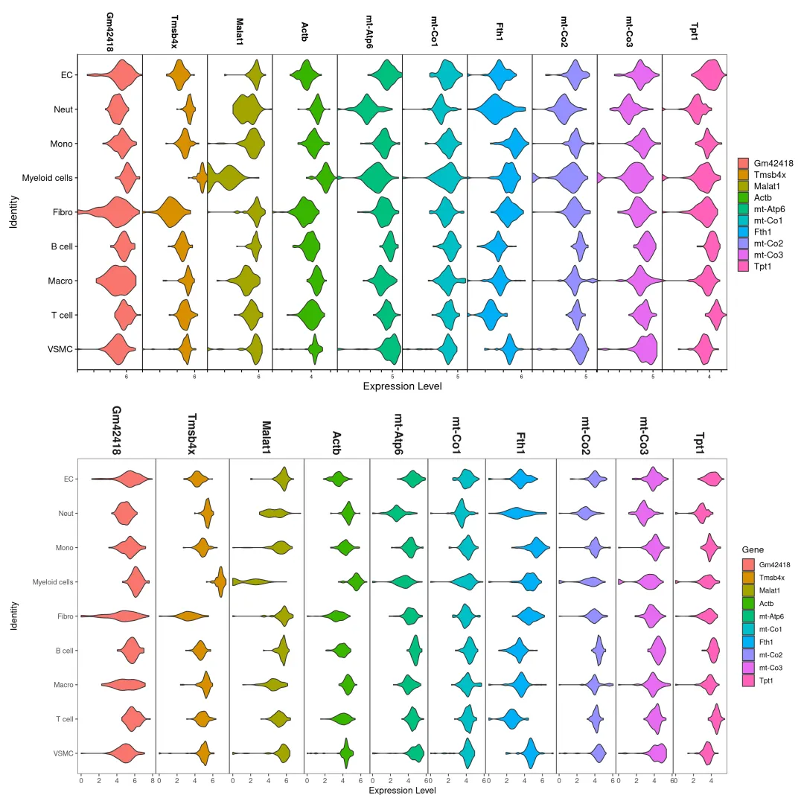
单细胞系列教程目录
单细胞数据分析系列教程：B站视频，先看一遍视频再去看推送操作，建议至少看三遍：https://www.bilibili.com/video/BV1S44y1b76Z/本公众号单细胞相关资料都可以在这里订阅：scRNA-Seq学习手册2023_R语言版
单细胞测序基础数据分析保姆级教程，代码部分整理在往期推送之中：手把手教你做单细胞测序数据分析|1.绪论 手把手教你做单细胞测序数据分析|2.各类数据结构与读取方法手把手教你做单细胞测序数据分析|3.单样本分析 手把手教你做单细胞测序数据分析|4.多样本整合 手把手教你做单细胞测序数据分析|5.细胞类型注释，从入门到入土手把手教你做单细胞测序数据分析|6组间差异分析 手把手教你做单细胞测序数据分析|7基因集富集分析 Seurat中分类变量处理技巧 沉浸式统计细胞比例
单细胞图片改造计划：改造单细胞降维图| 1.DimPlot的探索 改造单细胞降维图| 2.ggplot2中的DIY 改造单细胞降维图| 3.3D降维图与动图绘制 改造单细胞降维图| 4.一些造好的轮子 沉浸式统计细胞比例 改造单细胞FeaturePlot
SCENIC转录因子分析：SCENIC单细胞转录因子预测|1.绪论 SCENIC单细胞转录因子预测|2.学习手册 SCENIC单细胞转录因子预测|3.软件安装与数据准备 SCENIC单细胞转录因子预测|4.精简版流程 SCENIC单细胞转录因子预测|5.step1+step2构建共表达网络与regulon SCENIC单细胞转录因子预测|6.Step3 利用AUCell对Regulon评分 SCENIC单细胞转录因子预测|7.Step4 二元矩阵的计算与可视化 SCENIC单细胞转录因子预测|8.Step5 regulon聚类、分群、降维
上游fastq文件处理： 单细胞分析的最上游——处理Fastq文件：cellranger 单细胞分析的最上游——处理Fastq文件：dropseqRunnerCellranger报错：Unable to distinguish between [SC5P-R2, SC3Pv2] ...
细胞通讯B站连续播放起来比较方便： https://www.bilibili.com/video/BV1Ab4y1W7qx?p=1往期推送《细胞通讯》1.概论《细胞通讯》2.1CellChat基础分析教程 《细胞通讯》2.2CellChat多组别分析 《细胞通讯》CellChat学习手册
拟时序分析B站连续播放起来比较方便： https://www.bilibili.com/video/BV1br4y1x7Hf?p=1往期推送《拟时序分析》1.概论 《拟时序分析》2.monocle概论《拟时序分析》3.monocle2实操：精简版拟时序 《拟时序分析》4.monocle2实操：完整版 单细胞测序数据进阶分析—《拟时序分析》5.初识monocle3 单细胞测序数据进阶分析—《拟时序分析》6.monocle3的降维、分群、聚类单细胞测序数据进阶分析—《拟时序分析》7.monocle3的拟时序分析 解决monocle2的orderCells报错的两种方法 一文搞定拟时序分析的下游可视化探索
scFAST系列scFAST分析| 01.绪论 scFAST分析| 02.单细胞分析准备工作 scFAST分析| 03.fast模块 scFAST分析| 04.Seurat分析及可视化
其他单细胞相关技术贴也在这里：细胞的数量由誰决定？单细胞中应该如何做GSVA？答读者问（三）：单细胞测序前景答读者问（四）：如何分析细胞亚群答读者问（八）：为什么Read10X也会报错? 答读者问（十）整合后的表达矩阵，如何拆分出分组信息？ 答读者问（十一）如何一次性读取一个目录下的cellranger输出文件？ 给你安排一个懂生信的工具人（十）：不学编程 零代码完成单细胞测序数据分析：Loupe Browser 什么？不做单细胞也能分析细胞类群和免疫浸润？ 答读者问 （十三）查看Seurat对象时的ERROR：type='text' 各类单细胞对象（数据格式）转换大全（一）批量整理好GEO中下载的单细胞数据答读者问 （十五）稀疏矩阵转matrix, as.matrix函数是下下策 答读者问 （十六）做单细胞测序到底需要多少内存答读者问 （十七）调用的线程越多就算的越快嘛? 答读者问（十八）、一个我至少被问过30遍的monocle报错没有barcode文件的单细胞数据要怎么读取 单细胞基因集评分之AUCell 粉丝来稿|1. Seurat4相较于Seurat3的几点改动 如何加快Seurat的计算速度 一文搞定单细胞基因集评分答读者问（二十）四个单细胞样本只给了一套文件怎么读 人类单细胞测序数据中有哪些以"**-"开头的基因 为什么总把分辨率调的很高 Seurat中如何让细胞听你指挥 答读者问| 22.object 'CsparseMatrix_validate' not found 单细胞数据在R中的读取及存储速度太慢怎么办？这个神包来帮你！ 单细胞分群分辨率选择困难症
单细胞文献阅读：测序技术的发展与应用Biomamba助推的第二篇文章!发表了！又来了！Biomamba生信基地助推的第四篇文章!
单细胞测序解析糖尿病肾病中肾小球的动态变化
Cell metabolism| 单细胞测序技术解析健康人与T2D患者的胰岛差异
Science| 小鼠全肾单细胞测序开篇之作
一篇不花钱就能白嫖的文章
不会吧不会吧，Nature都能白嫖？
高氧下小鼠肺发育损伤的ScRNA图谱
IgAN & STRT-Seq
老树开新花—EGFR、肿瘤、免疫+scRNA-Seq
癌前基质细胞驱动BRCA1肿瘤发生
紧跟生信"钱"沿,胰腺癌&免疫多模态图谱
原发头颈癌和肿瘤转移微生态
《Cell Metabolism》：肾脏疾病&代谢&核受体ESRRA
《Nature communication》：PD-1&急性髓细胞性白血病&T Cell
单细胞测序揭示鼻咽癌微环境的基质动力学和肿瘤特异性特征
《Nature》：MYB调控衰竭性T细胞对检查点抑制的响应单细胞都能活检测序了？
文献阅读(二十九)、单细胞测序做到什么程度能毕业|硕士篇
文献阅读(三十)、单细胞测序做到什么程度能毕业|博士篇2022年了，都有哪些器官/组织有scRNA-Seq数据|小鼠篇
2022年了，都有哪些器官/组织有scRNA-Seq数据|人类篇
2023年了, 都哪些物种有scRNA-Seq数据终于读到一篇用monocle3做拟时序的文章
单细胞转录组+亚细胞空间代谢组=25分文章
酸了，六个样本的scRNA-Seq+差异分析=9分文章自测scRNA-Seq+scWGBS=3分三区文章？
百万级单细胞多组学数据集成空间转录组与单细胞转录组整合分析工具大比拼
单细胞注释复写单细胞注释复写(一):Human Fetal Kidney单细胞注释复写(二): human colorectal 单细胞复写|3.急性心肌梗塞(AMI)外周血scRNA-Seq分析实战(链接重置) 单细胞复写|4. GSE157783数据集复现及差异分析
硬件准备： 生信分析为什么要使用服务器？ 有root权限的共享服务器,报我名字立减200￥ 独享服务器，生信分析不求人 为实验室准备一份生物信息学不动产

如何联系我们

 公众号后台消息更新不及时，超过48h便不许回复读者消息，这里给大家留一下领取资料及免费服务器(有root权限的共享服务器)的微信号 ，方便各位随时交流、提建议（科研任务繁重，回复不及时请见谅）。此外呼声一直很高的交流群 也建好了，欢迎大家入群讨论：
公众号后台消息更新不及时，超过48h便不许回复读者消息，这里给大家留一下领取资料及免费服务器(有root权限的共享服务器)的微信号 ，方便各位随时交流、提建议（科研任务繁重，回复不及时请见谅）。此外呼声一直很高的交流群 也建好了，欢迎大家入群讨论：
大家可以阅读完这几篇之后添加给生信入门初学者的小贴士 如何搜索公众号过往发布内容

 您点的每个赞和在看，我都认真当成了喜欢
您点的每个赞和在看，我都认真当成了喜欢